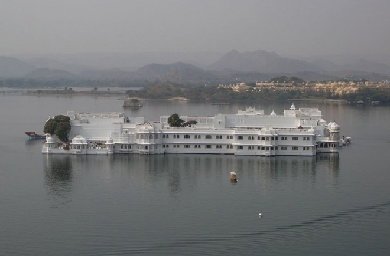
.
Limpid and large, Pichola Lake spreads from the shores of the city, reflecting the cool grey mountains on its rippling surface. It was enlarged by Udai Singh II after he founded the city. He flooded Picholi village, which gave its name to the lake. The lake is now 4km long and 3km wide, but it remains shallow and dries up in severe droughts when it is possible to walk to Jagniwas and Jagmandir, the two major islands on the lake.
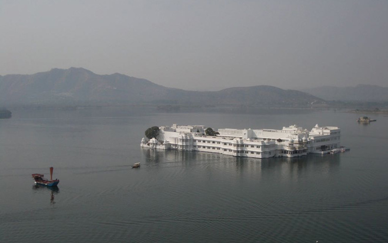
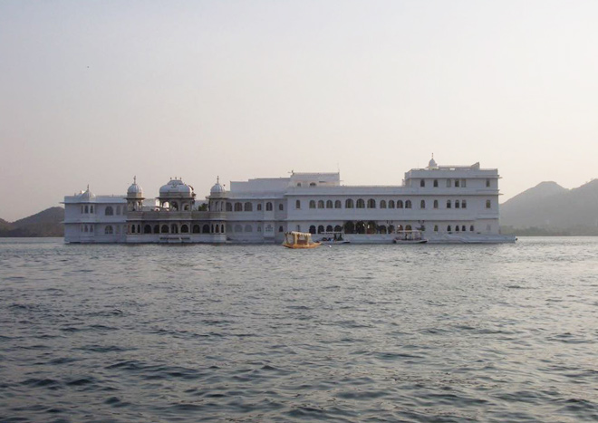
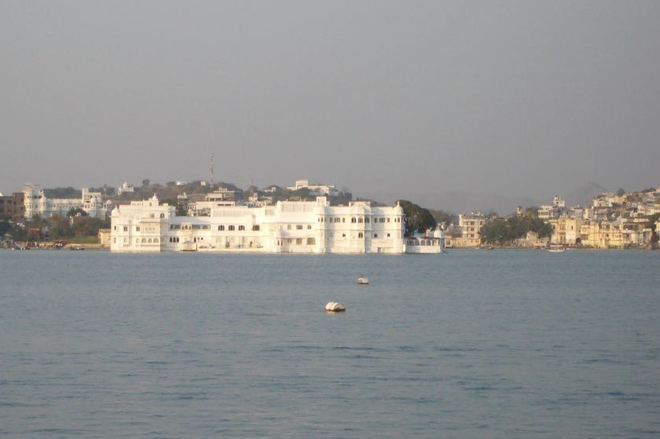
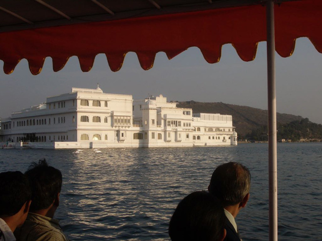
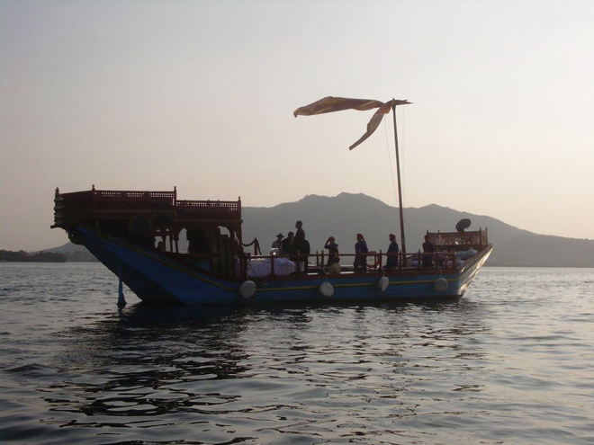
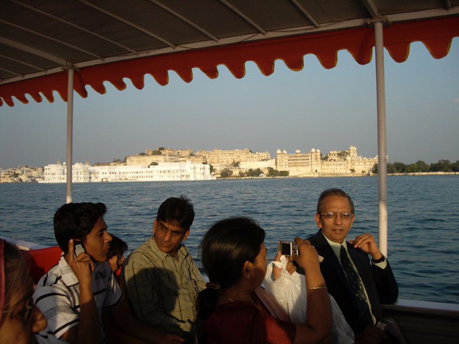
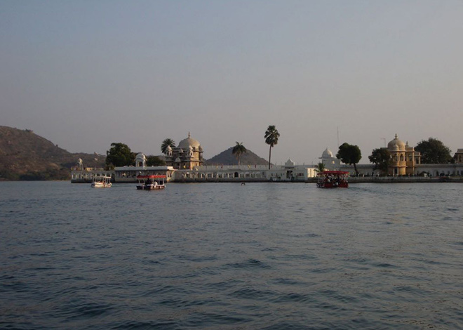
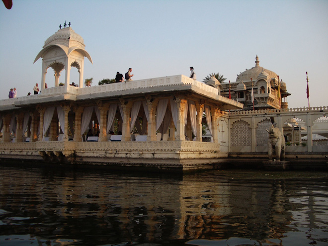
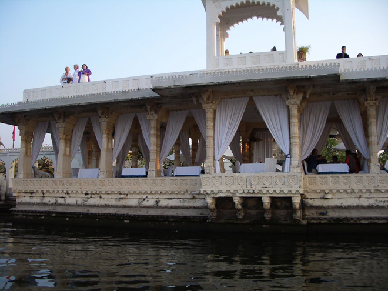
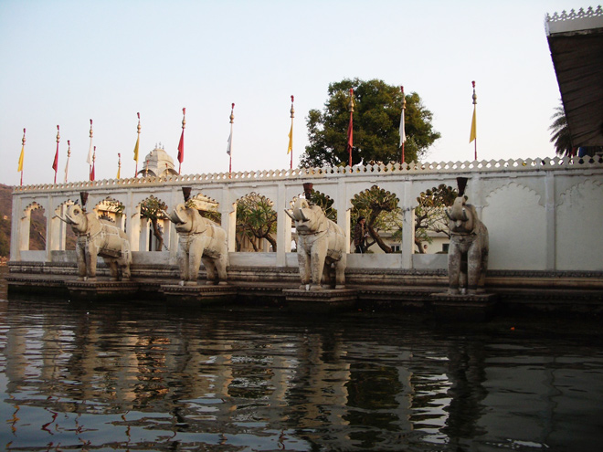
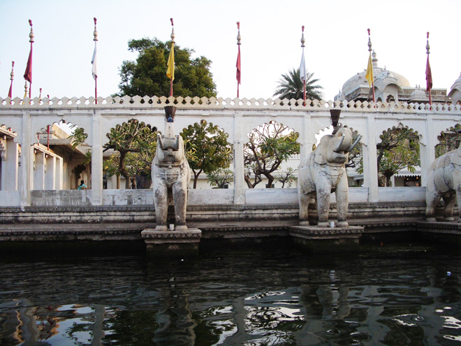
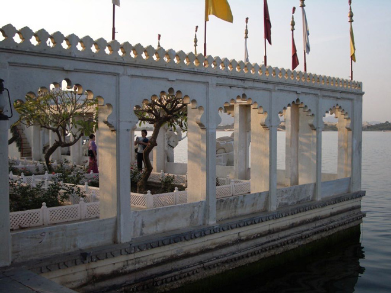
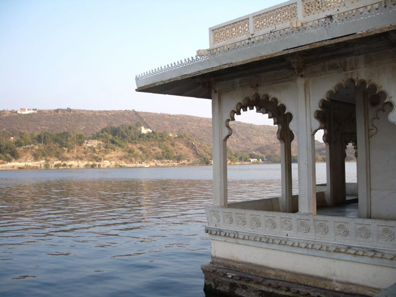
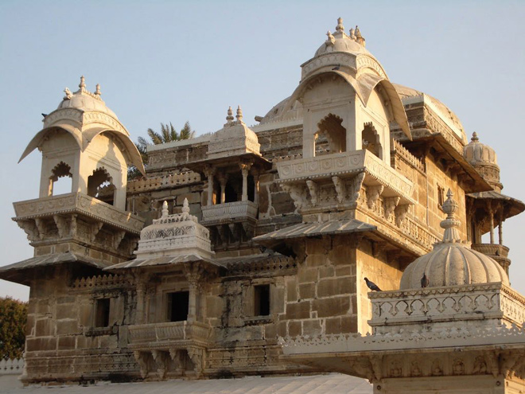
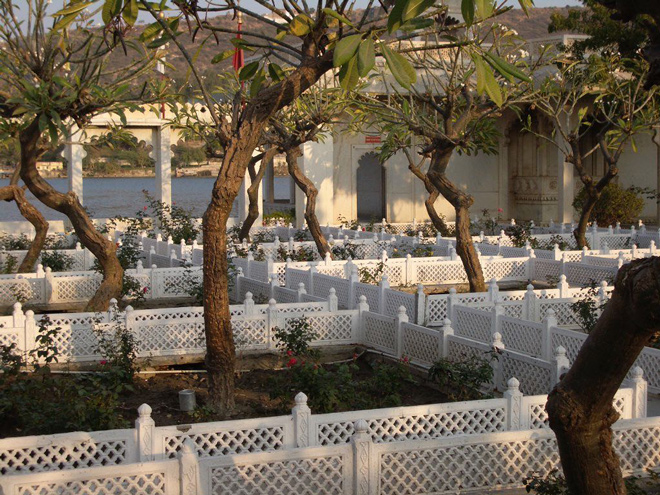
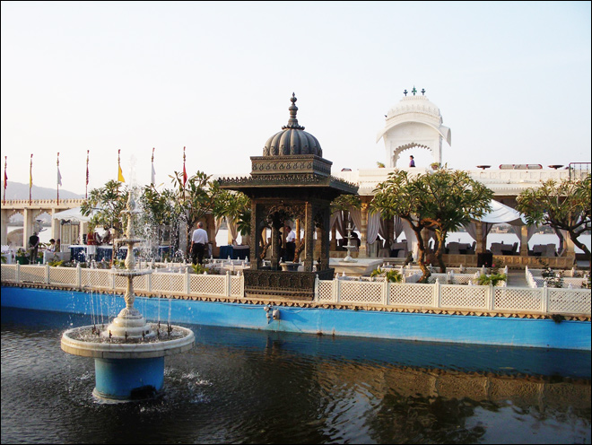
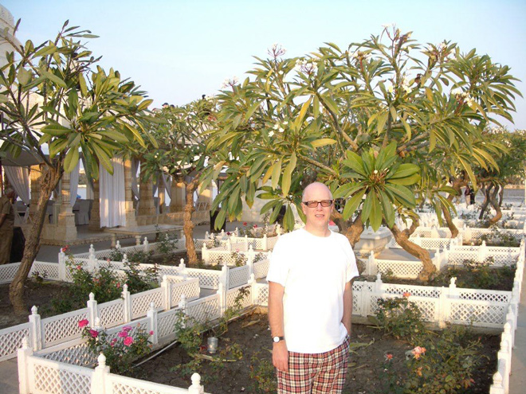
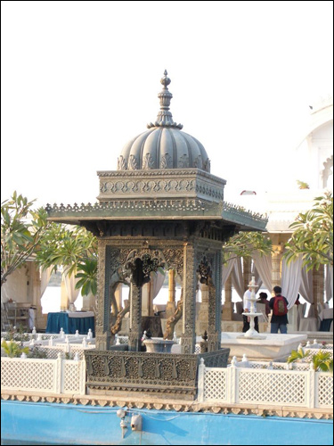
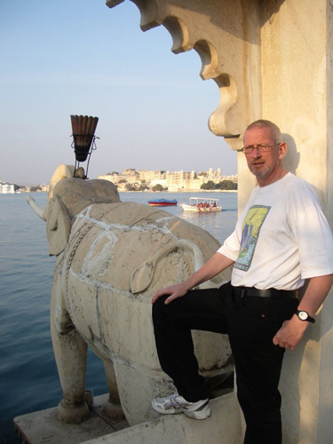
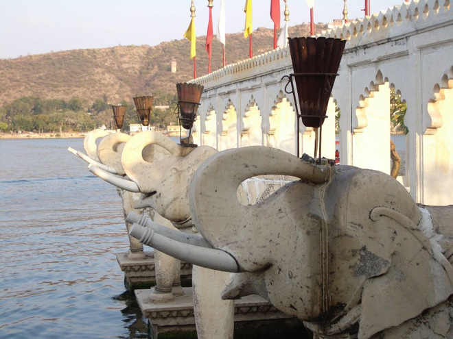
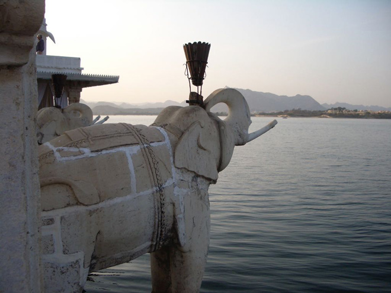
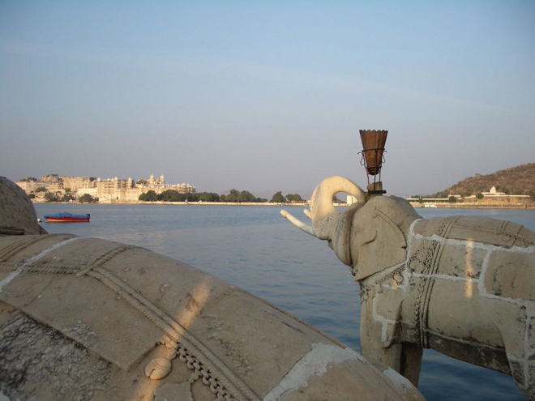
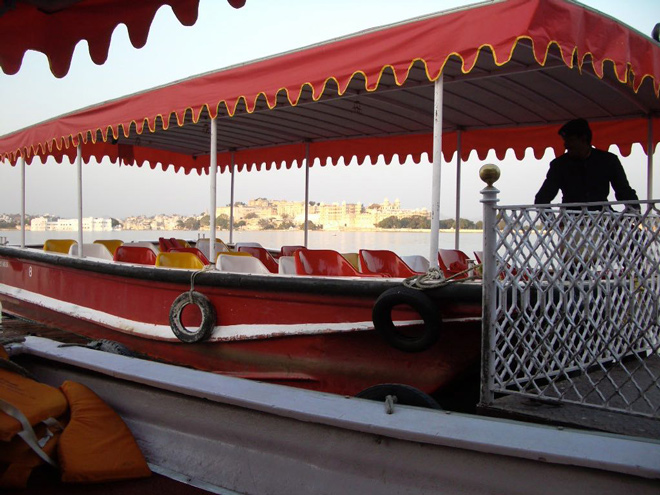
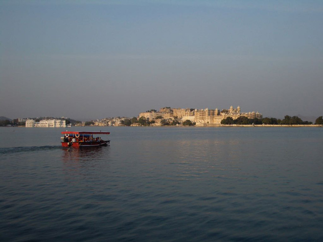
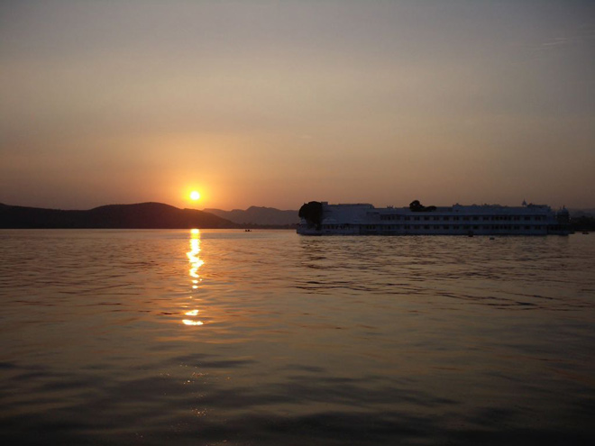
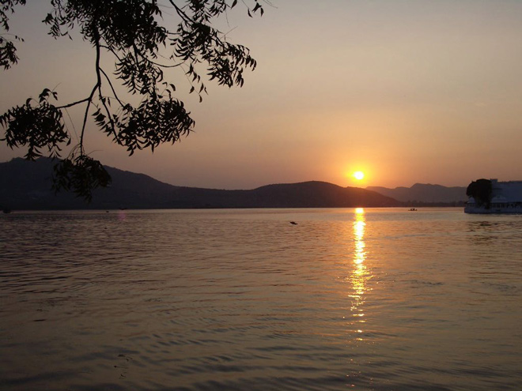
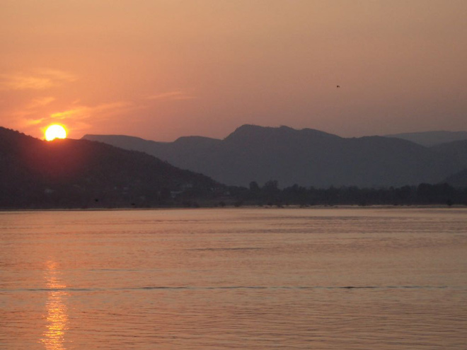